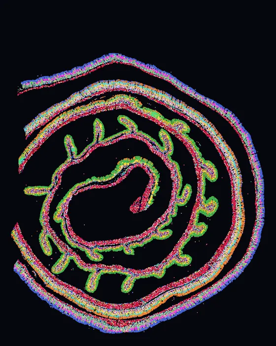
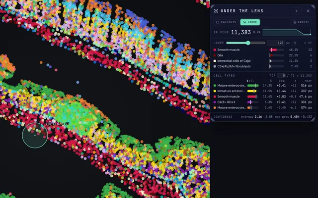
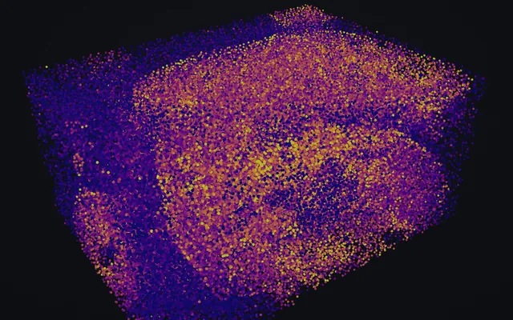
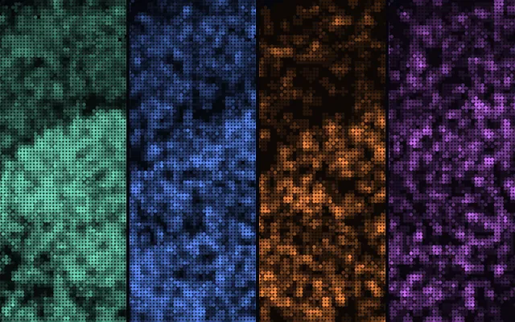
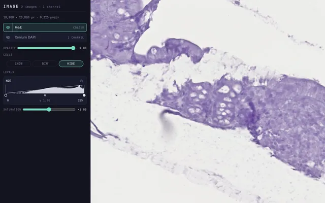
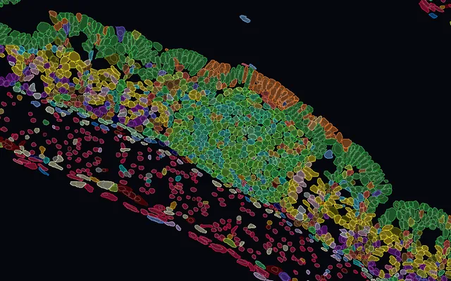
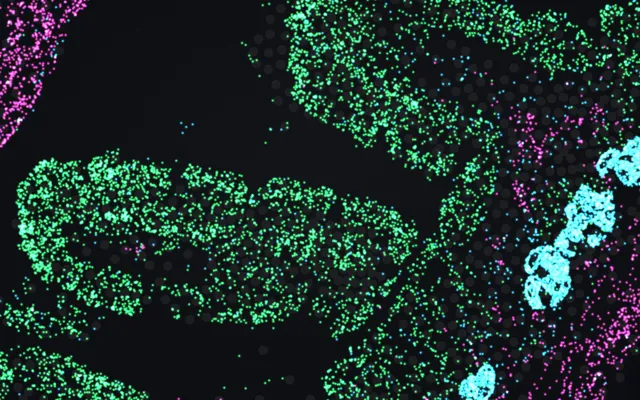
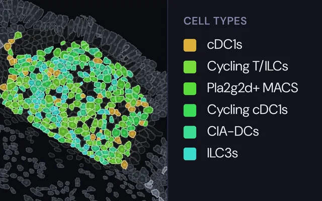
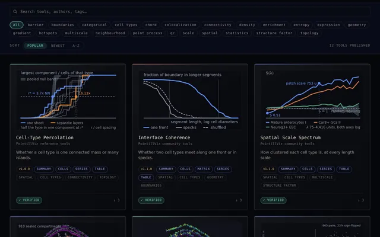

Importing
Bring an .h5ad into PointillViz: the import wizard maps its fields onto the viewer and converts it.
Outline
5 topics
PointillViz docs
Eleven tutorials, in the order you will need them. They are in preparation, and each page already lists what it will cover.
Start here
New to PointillViz? Bring in one section, explore it, export a figure.

Bring your data in.
Bring an .h5ad into PointillViz: the import wizard maps its fields onto the viewer and converts it.
Outline
5 topics
Sections, volumes, atlases and modalities.

2D · Section
Explore one tissue section: colour it by type or gene, read the Lens, draw regions and gate cells.
6 topics


Atlas · Cohort
Compose harmonized sections into one live montage, and compare conditions over every cell of the cohort.
6 topics

Multi-omics
Compare RNA, chromatin accessibility, histone marks and protein measured on the same spots.
6 topics
Images, outlines and molecules with the cells.

Lay H&E and multiplexed stains under the cells, and set each channel’s colour and levels.
6 topics

Draw cells as their segmentation outlines, from the whole section down to a single cell.
5 topics

Draw every detected molecule over the cells, and replay sequencing depth from 1% to 100%.
5 topics
Figures and tables to take with you.

Save views as PNG, PDF or SVG figures at up to 8×, and computed results as CSV files.
Outline
6 topics
Community tools and the AI assistant.

Install community tools, run them like built-in analyses, and publish your own.
Browse the Tool StoreBuild & publish
6 topics

Ask in plain language: a coding agent reads your data, runs tools and publishes results to a notebook.
6 topics